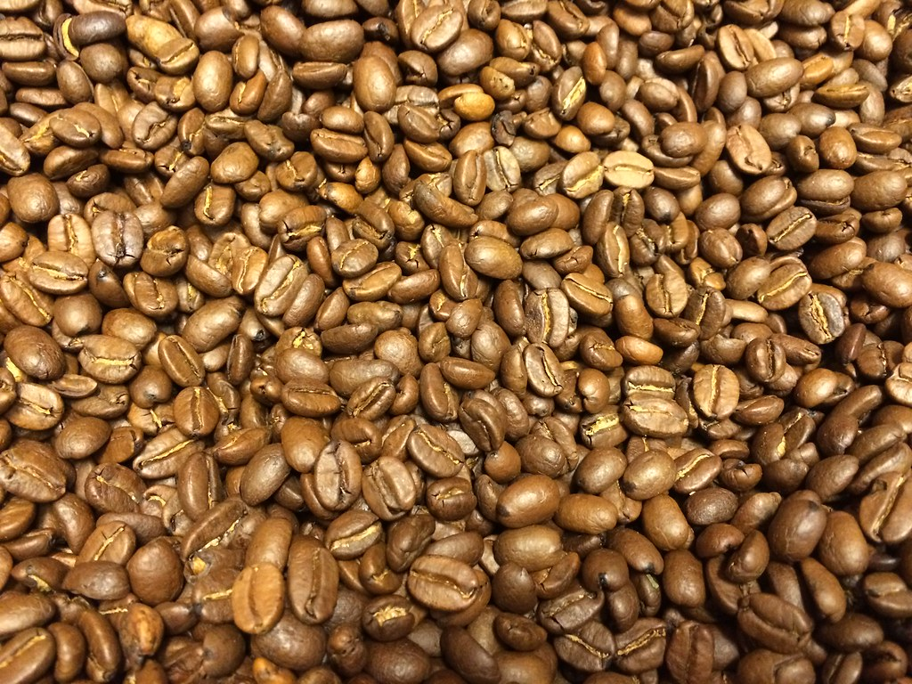

01 · Manifiesto
Servir, sin hacer ruido.
Nací en Nariño, Antioquia, y aprendí a amar la montaña recorriendo sus rutas desde niño. Hoy, después de más de diez años en turismo y hospitalidad, construyo un ecosistema completo —viaje, alojamiento, café, fotografía— con un solo propósito: servir, y mostrarle al mundo la Colombia buena.
El detalle siempre está cuidado, aunque tome más tiempo. Y hay una promesa que atraviesa todo lo que hago: nunca vas a sentir que te venden — vas a sentir que te atienden.
La pregunta de siempre
¿Qué hago?02 · Lo que hago
Cinco caminos.
Una sola mirada.

Arquitectura, interiorismo y hospitalidad. Espacios mostrados como se viven.
Ver el trabajo →- Páginas web
- Dashboards
- Automatizaciones
- Atención al cliente
Tecnología con criterio humano, al servicio de marcas que cuidan el detalle.
Ver los servicios →
Agencia de viajes. La Colombia auténtica, recorrida sin prisa.
Conocer Raíces →
Operación hotelera y gestión de propiedades. Expertos en Airbnb.
Conocer la operación →
Café colombiano de origen, con historia y proceso a la vista.
Conocer Vereda →Lo mejor no necesita ruido.
03 · Mi manera de trabajar
Lo que sostiene
todo lo demás.
-
01
Composición y encuadre
Cada imagen y cada espacio respiran. Un solo protagonista por composición; el vacío también comunica.
-
02
Luz natural
Golden hour o luz difusa. Nunca luz dura, nunca artificio que no se sienta real.
-
03
Consistencia
Cinco caminos, una sola mirada estética y el mismo estándar de detalle en todos.
-
04
Precisión en el detalle
El detalle siempre está cuidado, aunque tome más tiempo. Es la promesa de la casa.
-
05
Mentalidad colaborativa
Trabajo con calma y de cerca: escucho primero, propongo después, y acompaño hasta el final.
04 · Contacto
Cuéntame qué buscas.
Viajar, hospedarte, un café con historia, o fotografía y web — te oriento con calma.
bayronlondonoc@gmail.com